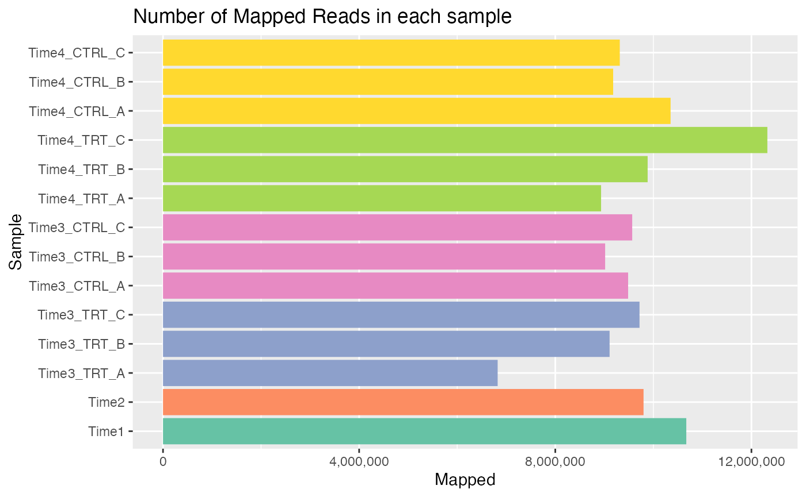
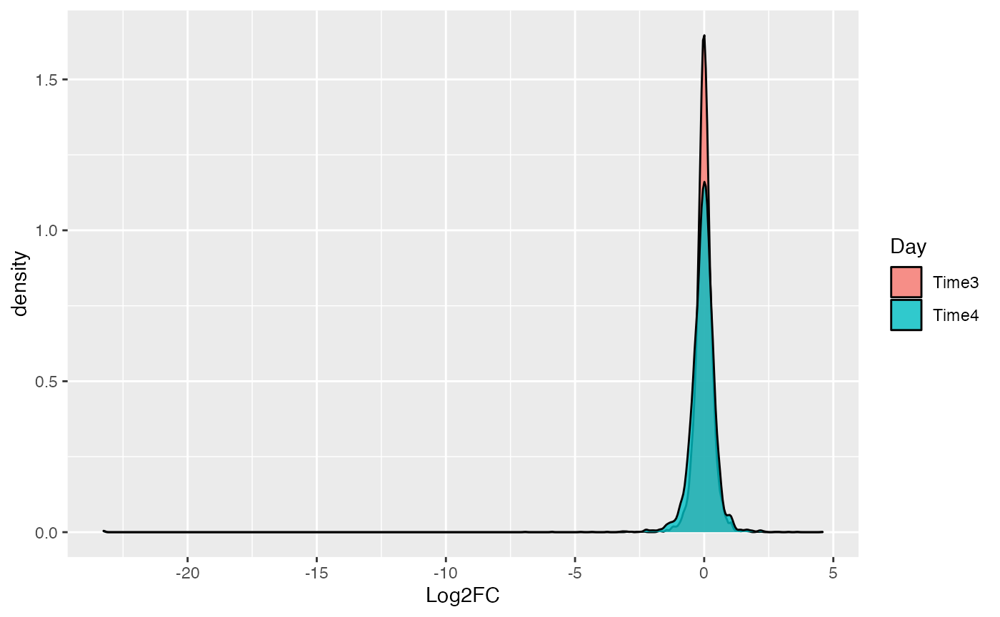

Analysis_Example
Analysis_Example.RmdImporting Pacakge
library(ScreenR)
ggplot2::theme_set(ggplot2::theme_light())Read Data
We will use as example a Loss of Function Genetic Screening Performed on THP1 using Metforming at Day3 and Day6. First of all the data are read.
data <- tidyr::tibble(CountTable_THP1_CONTROL_vs_MET)
colnames(data) <-
c("Barcode", "T0", "T48_postPURO", "Day3_Met_A", "Day3_Met_B",
"Day3_Met_C", "Day3_DMSO_A" ,"Day3_DMSO_B","Day3_DMSO_C",
"Day6_Met_A", "Day6_Met_B","Day6_Met_C", "Day6_DMSO_A",
"Day6_DMSO_B", "Day6_DMSO_C")
data <-
data %>%
dplyr::mutate(Barcode = as.factor(Barcode)) %>%
dplyr::filter(Barcode != "*")
total_Annotation <-
Table_Annotation %>% tibble::tibble() %>%
dplyr::mutate(Barcode = as.factor(.$Barcode))Object Creation
The ScreenR object is created using the function create_screenR_object()
groups <- colnames(data)[2:length(colnames(data))]
groups <- gsub('(.*)_\\w+', '\\1', groups)
groups <- factor(x = groups, levels = unique(groups))
groups## [1] T0 T48 Day3_Met Day3_Met Day3_Met Day3_DMSO Day3_DMSO
## [8] Day3_DMSO Day6_Met Day6_Met Day6_Met Day6_DMSO Day6_DMSO Day6_DMSO
## Levels: T0 T48 Day3_Met Day3_DMSO Day6_Met Day6_DMSOStart Analysis
object <- normalize_data(object)
object <- compute_data_table(object)Mapped Reads
plot <- plot_mapped_reads(object, palette) +
ggplot2::theme(legend.position = "none",
axis.text.x = element_text(angle = 40, hjust = 1)) +
ggplot2::ggtitle("Number of Mapped Reads in each sample")
plot
Boxplot
plot <- distribution_mapped_reads(object, palette,
alpha = 0.8,
type = "boxplot") +
ggplot2::theme(legend.position = "none",
axis.text.x = element_text(angle = 40, hjust = 1))
plot 
Boxplot
plot <- distribution_mapped_reads(object, palette,
alpha = 0.5,
type = "density") +
ggplot2::theme(legend.position = "none") Control Genes
object@data_table %>%
dplyr::filter(Gene %in% c("RPL30", "PSMA1", "LUC")) %>%
ggplot2::ggplot(., aes(x=Sample, y=Frequency, fill=Treatment)) +
ggplot2::geom_boxplot(alpha = 0.9, outlier.shape = NA) +
ggplot2::geom_jitter(shape=16, size = 0.7, aes(colour = Treatment)) +
ggplot2::scale_fill_manual(values = unique(palette)) +
ggplot2::scale_color_manual(values = unique(palette)) +
ggplot2::scale_alpha_manual(values=c(1, 0.1)) +
ggplot2::theme_light() +
ggplot2::ylab("Normalized Mapped Reads") +
ggplot2::theme(axis.ticks = element_line(size = 0.3),
# axis.text.x = element_text(angle = 25),
legend.position = "none", legend.direction = "horizontal") +
ggplot2::coord_flip() +
ggplot2::scale_x_discrete(limits = rev(unique(object@data_table$Sample))) +
ggplot2::facet_wrap("Gene", scales = "free")
Barcode Lost
plot <- plot_barcode_lost(screenR_Object = object,
palette = palette) +
ggplot2::theme_light() +
ggplot2::theme(legend.position = "none",
axis.text.x = element_text(angle = 40, hjust = 1))
plot
Plot MDS


Compute Metrics
# 2DG
data_with_measure_Met <- list(
Day3 = compute_metrics(object, control = "DMSO",
treatment = "Met", day = "Day3"),
Day6 = compute_metrics(object, control = "DMSO",
treatment = "Met", day = "Day6"))
plot_Zscore_distribution(data_with_measure_Met,
alpha = 0.8) +
ggplot2::scale_fill_manual(values = c("#1B9E77", "#D95F02")) +
ggplot2::theme(legend.position = "top") 
Z-score hit
zscore_hit_Met <- list(
Day3 = find_zscore_hit(table_treate_vs_control = data_with_measure_Met$Day3,
number_barcode = 7,
metric = "median"),
Day6 = find_zscore_hit(table_treate_vs_control = data_with_measure_Met$Day6,
number_barcode = 7,
metric = "median"))CAMERA
groupss <- c(rep("T0/T48",4),as.character(groups[5:length(groups)]))
matrix_model <- model.matrix(~ 0 + groups)
colnames(matrix_model) <- unique(groups)
camera_hit_Met <- list(
Day3 = find_camera_hit(screenR_Object = object,
matrix_model = matrix_model,
contrast = "Day3_Met"),
Day6 = find_camera_hit(screenR_Object = object,
matrix_model = matrix_model,
contrast = "Day6_Met"))ROAST
roast_hit_Met <- list(
Day3 = find_roast_hit(screenR_Object = object,
matrix_model = matrix_model,
contrast = "Day3_Met"),
Day6 = find_roast_hit(screenR_Object = object,
matrix_model = matrix_model,
contrast = "Day6_Met"))Find Common Hit
common_hit_Met_at_least_2 <- list(
Day3 = find_common_hit(zscore_hit_Met$Day3, camera_hit_Met$Day3,
roast_hit_Met$Day3, common_in = 2),
Day6 = find_common_hit(zscore_hit_Met$Day6, camera_hit_Met$Day6,
roast_hit_Met$Day6, common_in = 2))
common_hit_Met_at_least_3 <- list(
Day3 = find_common_hit(zscore_hit_Met$Day3, camera_hit_Met$Day3,
roast_hit_Met$Day3, common_in = 3),
Day6 = find_common_hit(zscore_hit_Met$Day6, camera_hit_Met$Day6,
roast_hit_Met$Day6, common_in = 3))